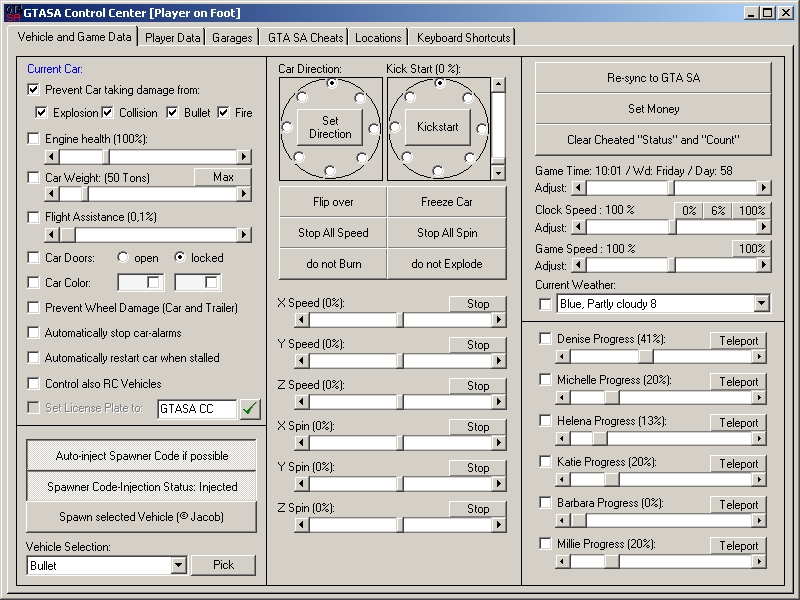

Control Center helps you out with almost all concepts related to vehicles. You can set your current car to Explosion-proof (EP), Damage-proof (DP), Bullet-proof (BP) and Flame-proof (FP). You can also lock these properties by checking the 'Prevent Car taking damage from' checkbox. That is, these specialities will be carried to every car you get in, or set back in force when GTA SA changes them after some cutscenes.
If you do not prefer setting your car to DP, you can also control the engine health using the relevant scroller. You can lock the engine health to a given pct. Please note that GTA changes the engine health to different values during missions, and if you lock the engine health using the control center during missions, GTA renders your vehicle as non-usable, resulting the car any the player to explode. Please use the 'do not burn' and 'do not explode' checkboxes to prevent the car burning / exploding due to damage caused by collisions. Also, the wheel damage is handled separately in GTA SA. You can check the 'prevent wheel damage' checkbox to prevent wheels of your car, and the car/trailer you tow from getting any damage. As you check this checkbox, your tires will also automatically be repaired.
If you change the weight of a car in handling.cfg, all cars of that type will have the same weight. On the Control Center, you can change only the weight of YOUR car. That is, if you set your car to 400 Tons, you can kick everything out of city boundaries, including the same type of cars as you drive. If you lock this setting, the car weight will be adjusted for your new cars as soon as you get in a new car. You will also get an on-screen feedback on the current status of your new car. By changing the car weight, the max speed, grip and suspension levels are automatically normalized to the new car weight so that you will not notice any handling changes as you change the car weight. Setting the car weight to 100 Kg's is a lot of fun. You can drive around as you like, but if you hit people, you will be thrown several hundread meters away. The Damage-proof speciality is also set by changing the car weight. Higher weights over 2 Tons let you crush other cars, but if you hit a wall, your car gets the same damage itself. So it is too risky to drive a 50 Ton car without the damage-proof speciality. The Car Specialities and 'Prevent Wheel Damage' checkbox sets the relevant dynamics for the vehicle you are driving, and the vehicle or trailer that you are towing.
You can lock or open your car doors by selecting 'open' / 'locked' option boxes. If you also check the 'Car Doors' checkbox, console decides for you: If you like to keep your doors locked, your doors will be locked as soon as you get in any car. They will also be locked after you get out. However if you try to get back in the same car, they will be opened for a second to let you in (please assign 'open car doors' console command to the same key that you use to enter a vehicle in game).
The cars have 2 main colors in GTA SA. A major and a minor color. The major color is the color of most parts of the car. The minor color is for example the color of the stripes. You can paint both of the colors of your current car by doubleclicking on the assigned color box. You will then get a color selection window as in the garage editor:
The available car colors are originally read from the carcol.dat file in GTA SA directory. If you have modded the car colors in game, you can also mod the control center to respect these changes. On car selection dialog window, you can select the color by doubleclicking, or by clicking on the color and then 'OK' button. Cancel returns back without any changes. By using the checkboxes in the Major and the Minor Colorboxes, you can lock the color. If you also check the 'Car Color:' checkbox, your new car will also be painted as soon as you get in.
Some parked cars have alarms. If you check the 'automatically stop car-alarms' checkbox, the control center checks the alarm status of the car as you enter in, and sets the alarm back in case it goes off.
A new concept in GTA SA is that the vehicles get stalled if you fall in water, or crash too hard. Normally, the car would not survive in both cases, but using the control center you can bring the car out of the water. The engine remains however stalled, and you cannot drive the car until you get out, and get back in. To prevent that, you can check the 'automatically restart car when stalled' checkbox, and your car engine will always run.
On some missions, you need to contol a RC car and drive/fly it as necessary. The 'control also RC cars' checkbox will help control center properly initialise this RC vehicle, so that you can apply normal vehicle specialities (as EP/DP.., weight, etc.) to the RC car, increase its speed, take a markup location, and transport this RC vehicle to the markup location.
There is another new concept in GTA SA: the number plates on the applicable vehicles. This function is under construction, but with the next version of control center, you will be able to not only read (as in this version) but also set the number plate on your vehicles.
In GTA SA, you can normally fly only with planes and helicopters, but not with cars. The flight assistance helps you freeze your car on air, so that you can 'fly' with your car as if you were flying an UFO. In that case, please use the speed console commands to control the car on air, as normal in-game controls will not work on air. Please note that the 'flight assistance' is not for the planes, as it freezes the vehicle on air, rendering in-game plane flight controls useless. Flight assistance automatically sets the Z speed to a given percentage if your car starts to fall. You can select the Flight-assistance percent from the scroll box. This percentage level is car specific, and 100% is the maximum speed that your car can reach by free-falling. So if you keep the percentage around 2% or 3%, your car will hang in the air like a heli. (it will move up and down very slightly due to wind conditions.)
GTA SA uses a three dimensional speed and spin model. Movements in X dimension heads to North for positive values of X, and South for negative values. Positive values of Y heads to East, and negative values to West. For Z speed, positive values makes the car go up, and negative, go down. The Percentage levels are from -400% to +400%. That means you can set the speed of your car up to 4 times of its max speed. The spins are also much like the same for X and Y spins. The positive values of Z spin causes a spin in counterclock direction, and negative values in clock direction. With the 'stop' buttons near the relevant spin/speed values, you can stop the speed or spin in only one coordinate, or in all coordinates (freeze car).
The Set Car Direction options are for setting your car in 8 directions (North, Northeast, East, Southeast, South, Southwest, West, Northwest), fully leveled to the ground. Kickstart Car function sets the car position as in Set Car direction function, and gives the car additionally a car-speed on the direction. The speed level is also adjustable in percentages.
The 'Don't Burn' and 'Don't Explode' checkboxes are for automatically controlling the car damage and burn status. If you choose 'Don't Burn', the 'Don't Explode' option is also checked. That is, if your car starts burning, the burning flag will be set back, and your car will be repaired automatically (except for the textures). If you choose only the 'Don't Explode' option, and your car starts burning, it will burn forever, but never explode as long as you are in the car.
The 'Flip Car' button flips the car on 4 wheels, and back.
In case you load another saved game, or start a new game, GTA SA might assign a new pointer to the player in memory, and some player and car specific commands do not work. Please restart the control center, or click on 'Re-sync to GTA SA' button to re-syncronize all the game pointers.
With the 'set money' button, you can enter a money value to set the in-game player money amount to the given amount.
If you cheat within the game using the GTA SA internal cheats, a 'cheated' flag gets set, and everytime you want to save your game, you get a nag screen. By clicking on the 'clear cheated status and count' button, you can set this flag back to zero, and clear the stats value 'Times cheated' in GTA SA.
The GTA San Andreas game time respects the time, and weekday, but not the months or seasons. Using the scroll-box or console commands, you can game time in hours. The control center takes care of the changes in weekdays and days passed in game as you change the game time. In the in-game clock, the clock speed is set to 1 real seconds = 1 game minutes. You can change this value using the relevant scroll-box, completely freeze the game clock, set it to 1 real minutes = 1 game minutes, or any other value, represented as percentage to original game clock speed.
The game speed is controlled seperately. Using the assigned scroll-box, or the console command, you can change the game speed from 10% to 1000% of the original speed. Please note that the changes in game speed changes the complete game-play, so slowing down means that the player and movement animations, the game respond to your mouse and key controls also slow down.
The Game Time, Clock Speed and Game Speed sliders will start with the caption '(unknown)' until the game values are read from GTA SA. You can then change these values as you like.
There are 46 different weather animations in game from scorching hot to storming weather. The 'Current Weather' selection combo represent the current weather in game. As you pick a new weather from the combo, the game weather automatically gets set. The new weather will remain for a while, and will automatically get re-set to another value that is relevant to your location in game (ie. you get sand-storms only in desert etc.). The selected weather remains for about 5 to 10 minutes. You can also set the weather selection as a keyboard shortcut to change game weather using shortcut keys. If you lock the selected weather, gta sa will still change it for day/night animations, but the weather specifications like rain or clear sky will remain unchanged (ie. locked).
GTA SA has introduced the girlfriends concept to game-play, and yes, you can change / lock the ongoing process with the girlfriends. Please note that you have to have the given girl as girlfriend so that these sliders actually work. As you get a new girlfriend, the progress gets set to 20% by the game. Also, if you have set the on-going girlfriend progress to 100% using the control center, you will still have to date with the girlfriend once more to get the girlfriend specific presents. The girlfriend progresses are coded within the SCM block, and those sliders only work if you are using the standard SCM. You can still experiment with the progress sliders. If you are lucky, they might still work. If not, your ongoing game will get damaged. For this reason, we have implemented the checkbox 'is SCM Original' on Page 6 of the control center to leave this decision to you. On this page, you find also the injectable cheats (so far 20).
The Car Spawner function is courtesy of Jacob. This function requires an ASM code to be injected to the executable. The control center checks if the code is already injected or not. If injected, you can use the spawn car button and the relevant console command to spawn any kind of vehicle right in front of the player. The control center also checks if the code is injectable or not. If you are using a gta_sa.exe version that we have not yet tested, this checkbox will remain disabled with the status caption 'code not injectable'. If the code is injected, you can select a vehicle from the combo box to spawn, or click on 'pick' button to bring the garage editor car selection screen to select one of the vehicles. Please note that the car selection screen has only parkable vehicles. You can however spawn all vehicles using the combo's and the relevant console command. The 'Autoinject' checkbox is to prevent alt+tab out of the game. If checked, control center injects the code automatically if injectable.
The injection code is extended some more on the version 2.1, and now takes care of proper initialisation of weapons, ie. works for spawning weapons. Please inject this code if you want also to change/lock the player weapon specs.